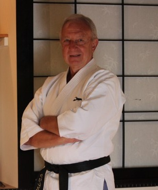
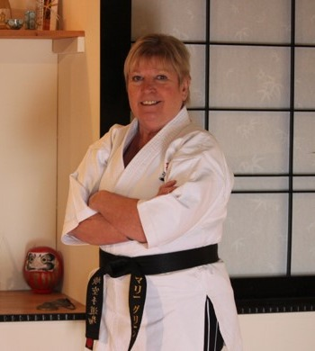
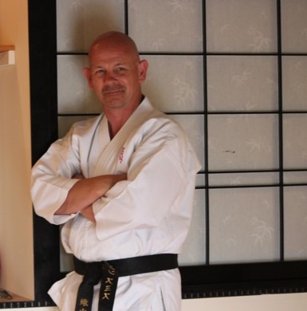

Over 80 years of combined martial arts experience.

Chief Instructor & Founder
Shihan Chris Green is the Chief Instructor of the group. He started his training in Shotokan Karate under the instruction of Sensei Jim Wilson in September 1974, founding Sasori Karate in January 1984.
He transferred to Goju under the instruction of Shihan Leo Lipinski in 1987 and represented Great Britain at the JKF National Championships in Takamatsu, Japan in 1989. He was awarded Nanadan (7th Dan) in 2019 and joined Shoseikan in September 2019.
Chris actively served as Chairman of the JKF Gojukai GB for five years and was Chief Instructor for GB Karate do Goshukan from 2002 to 2014. In 2023 he visited Japan and was honoured by being added to Ishihara Kancho's Shihankai.

Assistant Instructor & Secretary
Shihan Marie Green is Assistant Instructor and Secretary of the group. She started her training in 1975 under Sensei Jim Wilson and co-founded Sasori Karate with Chris in January 1984.
She represented Great Britain alongside Chris in Japan in 1989 and achieved her Godan (5th Dan) in December 2018. Marie was awarded Rokudan (6th Dan) during their 2023 Japan visit.
As well as assisting Chris with teaching, Marie handles all administration for the clubs — an essential part of what makes Sasori run so smoothly.

Senior Instructor
Sensei Dean Smith started his training in Shotokan Karate with Sasori in January 1984, switching to Gojukai in 1988 when the whole club transferred. He achieved his Shodan (1st Dan) Gojukai in July 1990 and his Yondan (4th Dan) with Sasori in December 2013.
Throughout more than 30 years of dedicated training, Sensei Dean has been a tremendous support to Sasori and covers teaching of classes whenever required.